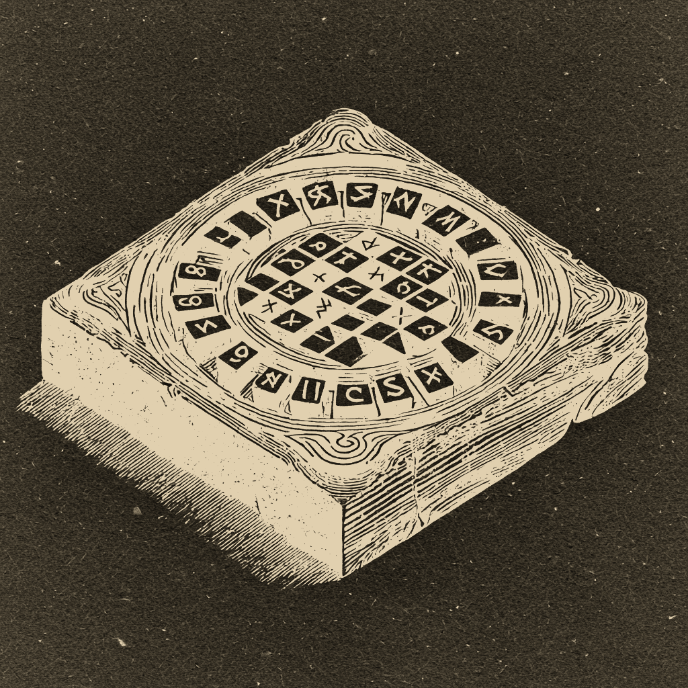

Battle on the fields of Ragnarok.
Vigrid is a Norse-mythology strategy game for two players. Command Odin's chosen warriors or Loki's frost giants across a 5×5 battlefield, moving pieces using rotating cards drawn from a shared pool.
Five cards are always in play — two in each player's hand, one waiting in the center. On your turn, choose a card, move a piece using its pattern, and the card rotates to your opponent. The same cards cycle through both hands, so every move shapes what comes next.
Capture the enemy Master, or move your own Master onto the enemy throne. Both paths are always open — the best players watch for both at once.
Fenrir, Sleipnir, Valkyrie, Huginn, Bifrost, Wyrd, and 13 more — each named for a god, creature, or force from Norse mythology. Five are dealt randomly each game, giving every match a different character.
From Beginner (great for learning the rules) to Hard (full minimax AI with alpha-beta pruning). The AI plays instantly, running in the background so the game always feels responsive.
Tap any of your pieces to see exactly where it can move. Tap an enemy piece to preview their possible replies. Tap any card to zoom in on its constellation diagram and read about its Norse namesake.
Vigrid collects no data. Everything — stats, preferences — stays on your device. No accounts, no network access. Privacy policy.
Questions or feedback? Open an issue at github.com/needyaz/luci-blue.
Requires iOS 16.0 or later. Free.